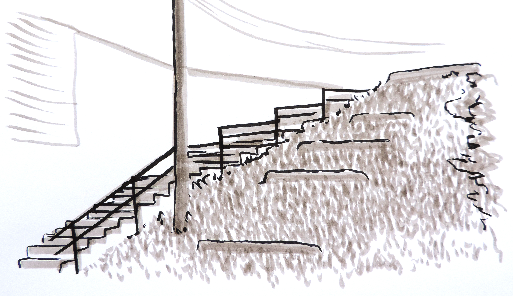
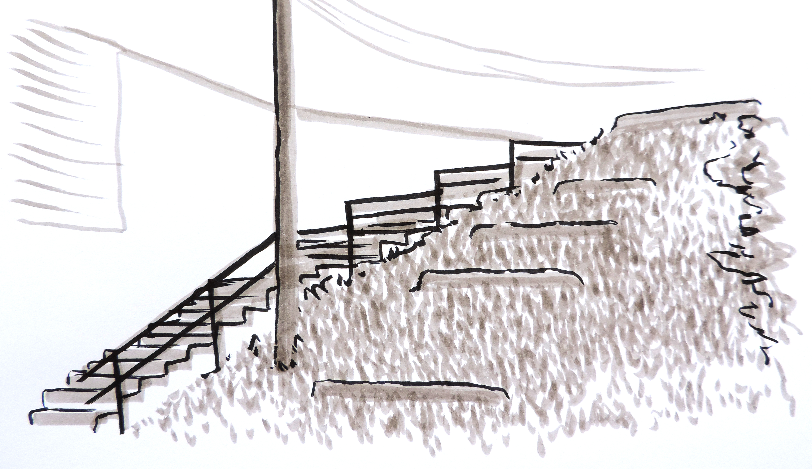
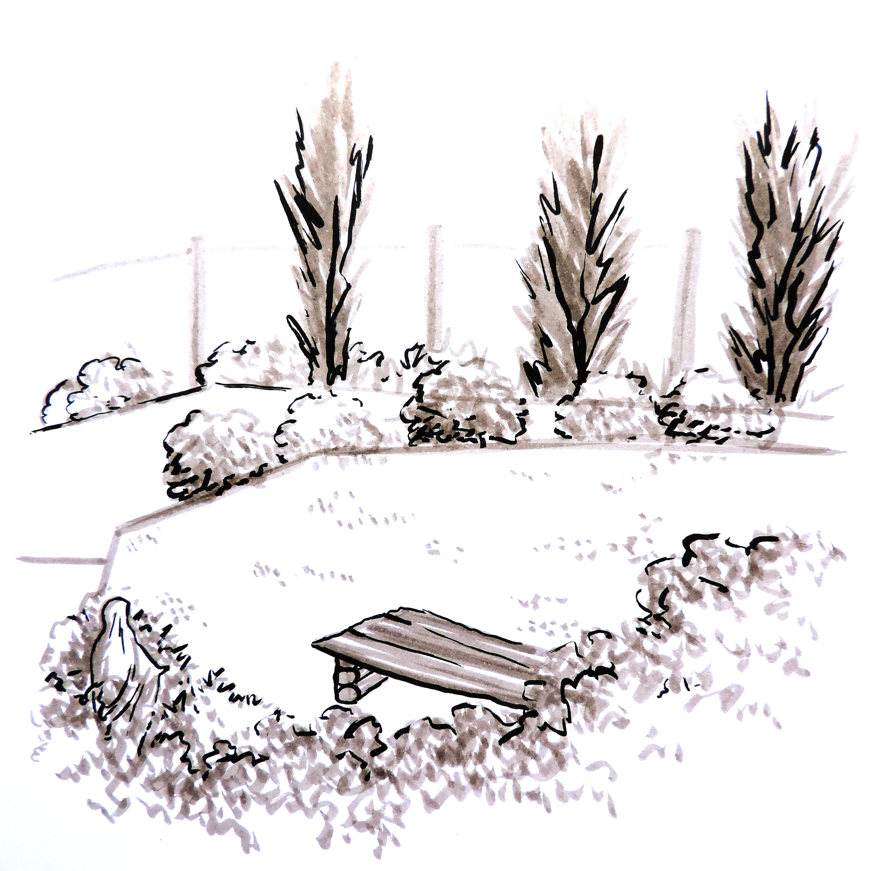
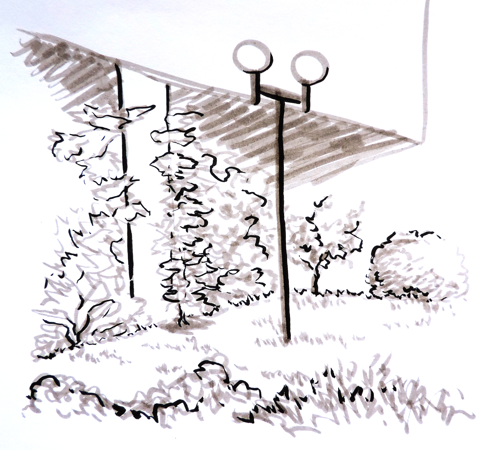
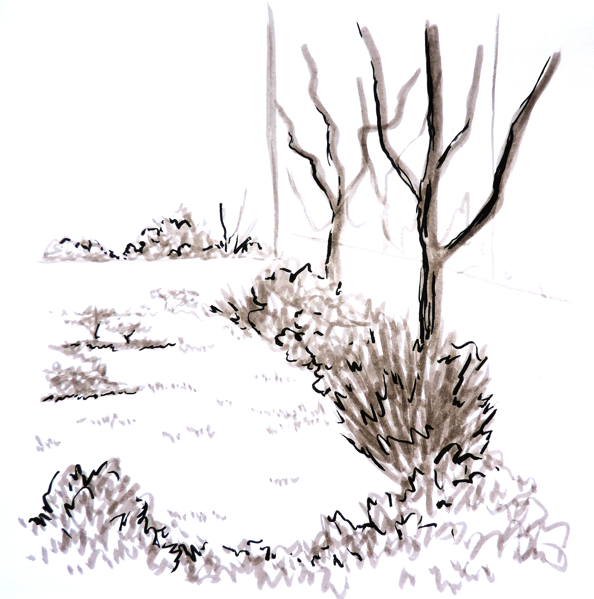

Croquis Universitarios
Los croquis hechos en la universidad corresponden al uso de la actividad de la observación practicada en la Escuela de Arquitectura y Diseño e[ad], y su gráfica se desprende del estudio de las tintas.
Los croquis hechos en la universidad corresponden al uso de la actividad de la observación practicada en la Escuela de Arquitectura y Diseño e[ad], y su gráfica se desprende del estudio de las tintas.
 
 
  